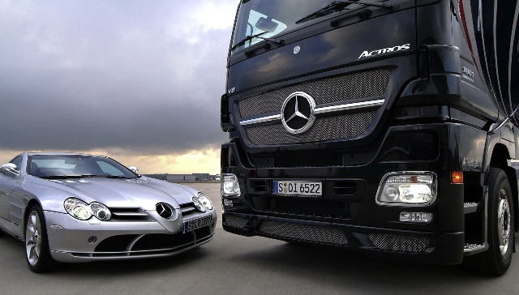
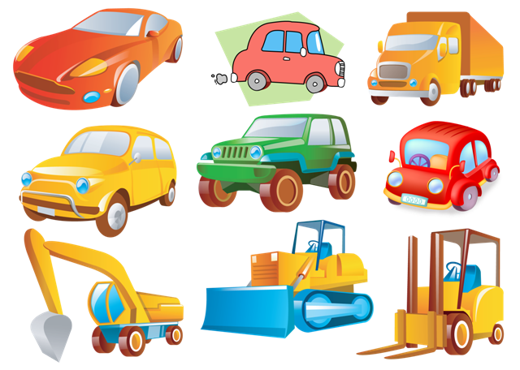
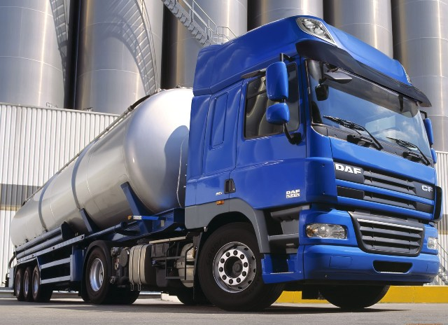
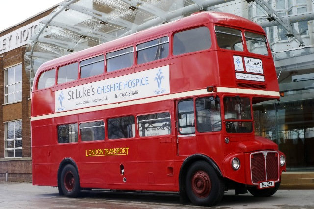
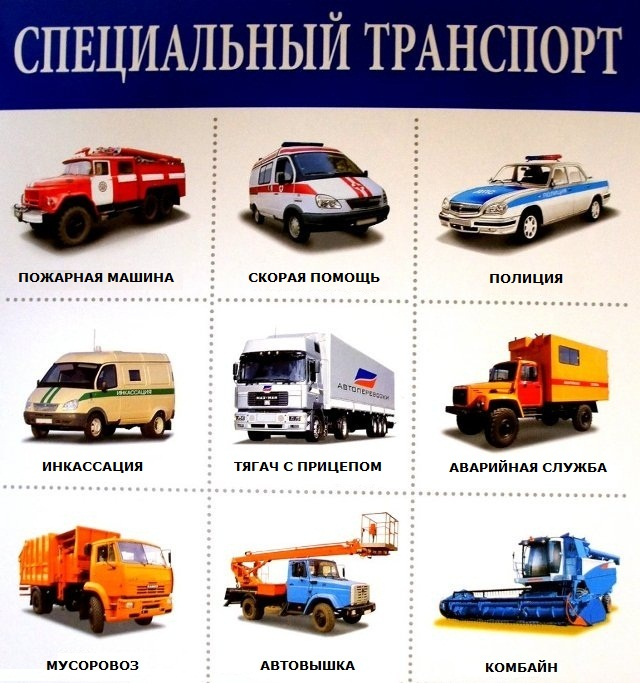

грузовые;
грузопассажирские;
автобусы;
спецтранспорт.
Рассмотрим подробнее каждый тип авто.
В основу европейской классификации положено разделение машин по габаритам. Все автотранспортные средства получают буквенное обозначение. А — компактные малолитражки, предназначенные для поездок по городу. В 3-х или 5-дверный хэтчбек обычно помещается 2-4 человека и малогабаритный груз. Максимальная длина машин класса «А» достигает 3,6 м, ширина — 1,6 м. В — автомобили длиной до 3,9 м и шириной до 1,7 м. Привод — передний, компактные размеры и экономный двигатель идеально подходят для использования в городе. С — группа легковых автомобилей, наиболее распространенных в Европе. Также имеет второе название — «гольф-класс», по названию популярной среди представителей среднего класса машины «Volkswagen Golf». Параметры кузова машин этой категории — до 4,3 м в длину и до 1,8 м в ширину. D — седаны и хэтчбеки с длиной кузова до 4,6 м и шириной от 1,8 м. Надежные и вместительные автомобили для всей семьи. Е — авто высшего среднего или бизнес-класса. Параметры кузова — от 4,6 м в длину и от 1,8 м в ширину. Отличаются повышенным уровнем комфортности, безопасностью, стильным дизайном и престижностью. F — представительские автомобили класса «люкс» с длиной кузова от 5 м и больше. Еще одна популярная классификация легковушек — по типу кузова.
Седан — классика автомобилестроения. Четырехдверный кузов имеет конструктивно отделенные друг от друга багажный и моторный отсеки. Хэтчбек — «задний люк», 3-х или пятидверные машины, в которых одна дверца относится к багажному отсеку. Универсал — машина с объединенным пассажирским и багажным отсеками. В народе носит название «семейный автомобиль». Кабриолет — авто с открывающимся мягким верхом. Может также носить название «родстер». Кроссовер — машина, сочетающая в себе вместительность «универсала» и проходимость внедорожника. Купе — спортивные компактные двухдверные автомобили с отделенным отсеком для багажа. Лимузин — длиннокузовные машины премиум-класса с вместительным и богато отделанным салоном. Пассажирский отсек можно отделять от водительского перегородкой. Грузовые машины
Бортовые — к ним относятся грузовые фургоны. Специализированные — самосвалы, рефрижераторы, балластные и седельные тягачи, контейнеровозы. Автоцистерны. Помимо этого, классификация грузовых авто выполняется по типу кузова, грузоподъемности, количеству осей и т.д. По типу кузова грузовые машины делятся на закрытые и открытые, тентованные, бортовые, самосвалы, изотермические фургоны, краны, микроавтобусы, лесовозы, контейнеры, седельные тягачи и пр. Разделение грузовых авто по количеству осей выделяет 2-х, 3-х, 4-х и 5-осные модели. Количество осей в некоторых случаях может превышать 5 штук. По типу мотора грузовики делятся на дизельные и бензиновые. По грузоподъемности различают малые грузовики, средние, большие, грузоподъемностью 1,5-16 тонн и от 16 тонн.
К ним относят автомобили, сконструированные: на базе легковых моделей — микроавтобусы, минивэны, пикапы; на базе грузовых моделей — вездеходы, «вахты», автомобили спецназначения. Минивэн — сочетание небольшого автобуса и легковушки. Основные приметы: короткий капот, просторный пассажирский отсек с тремя рядами сидений и высокие потолки. Микроавтобус — транспорт для перевозки 8 и более пассажиров. Длина кузова обычно не превышает 5 метров.
Автопарк автобусов насчитывает самые разнообразные модели, которые создавались с учетом особенностей эксплуатации. Есть автобусы туристические, школьные, пригородные, междугородные, двухуровневые и одноуровневые городские, автобусы для перевозки пассажиров в аэропортах, перронные и другие.
К этой категории автомобилей относятся автокраны, автолавки, строительная техника, гоночные машины, амфибии. Также в эту группу входят машины скорой помощи, бронированная автотехника, катафалки, агрегаты для уборочных работ и т.д.
